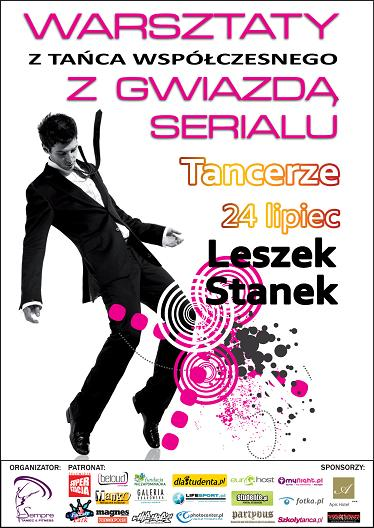

24-go lipca w Szkole Tañca SEMPRE odbêd± siê Tañca Wspó³czesnego z udzia³em
LESZKA STANKA!!
INSTRUKTOR:
Leszek Stanek - w 2004 ukoñczy³ Pañstwowe Studium Wokalno-Baletowe w Gliwicach.
Jako student wystêpowa³ w wielu produkcjach Gliwickiego Teatru Muzycznego, m.in. "Hallo Dolly" w re¿. Marii Sartowej, "Fooltoose" w re¿. Macieja Korwina i choreo. Jaros³awa Stañka.
W obu z nich zaprezentowa³ swoje wszechstronne mo¿liwo¶ci zarówno w tañcu, ¶piewie, jak i grze aktorskiej.
W tym czasie prowadzi³ równie¿ systematycznie warsztaty z biomechaniki i improwizacji ruchowej w Teatrze Ma³ym w Tychach i M³odzie¿owym Studiu Aktorskim.
W latach 2003/2007 Leszek by³ tancerzem ¦l±skiego Teatru Tañca. W tym czasie nie tylko by³ inicjatorem wielu projektów edukacyjnych, spo³ecznych i artystycznych, lecz tak¿e pod kierunkiem Jacka £umiñskiego wypracowa³ wiele niezapomnianych ról - stworzy³ postacie wyró¿niaj±ce siê si³± charakteru i g³êbi± uczuæ w spektaklach takich, jak:
"7,5", "Wrzaskowisko", "Czar Zwyczajnych Dni - sen ¦wiêtego" "Changing Lanes". Ze ¦l±skim Teatrem Tañca wystêpowa³, m.in. w Kanadzie, Indiach i Portugalii . Bra³ udzia³ równie¿ jako tancerz w projektach Mariusza Treliñskiego "Król Roger" oraz "Siedem Bram Jerozolimy" Pedereckiego.
Zdobywca stypendium Ohio Colombos University, za³o¿yciel Studia Teatru Fizycznego w Bytomiu,
Gra Kubê, jedn± z pierwszoplanowych ról w serial "Tancerze" (TVP2)
Jako dyrektor artystyczny IQ ARTivist's by³ inicjatorem za³o¿enia grupy Dance Event Production (DEP) zrzeszaj±cej wybitnych tancerzy tañca towarzyskiego (Ewa szabatin, Edyta Herbu¶, Rafa³ Maserak, Kamila Kajak, Magda Soszyñska i inni)
Praktykê nauczycielsk± zdobywa³ m.inn. w Ogólnokszta³c±cej Szkole Baletowej w Bytomiu.
Dotychczas stworzy³ kilka autorskich spektakli, które spotka³y siê z pozytywnym odbiorem zarówno krytyki jak i publiczno¶ci.
Dotychczasowe spektakl Stanka: